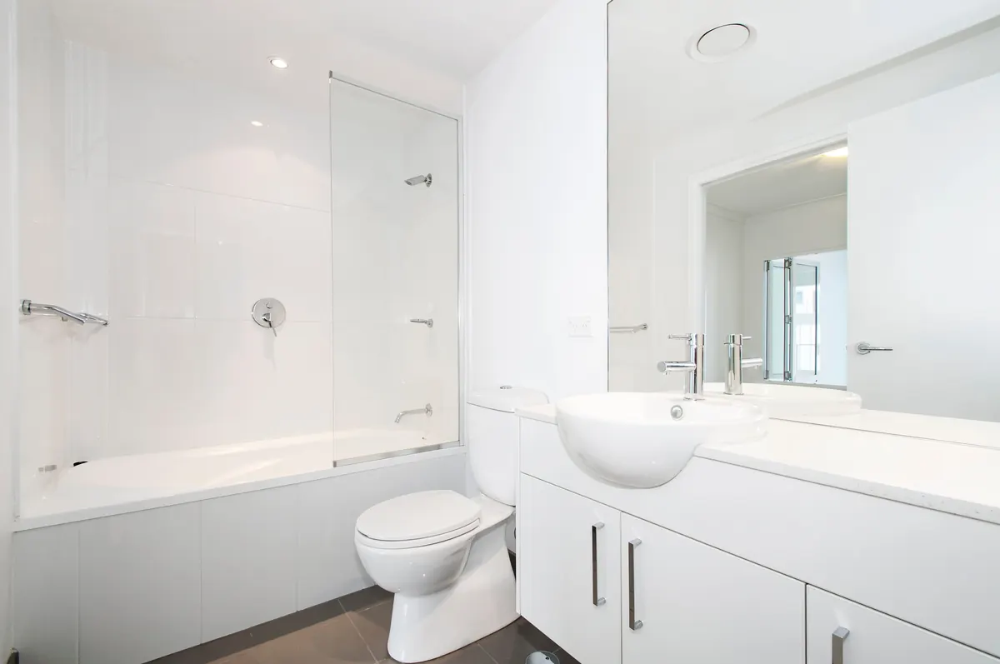

Buying a new toilet sounds simple until you realize not every toilet fits every bathroom. One of the most important details to understand before you buy is the rough-in size, often described as whether your toilet is a 10-inch center or a 12-inch center. At Angle Stop Plumbing, we help homeowners avoid the frustration of buying the wrong toilet by making sure the fit is right from the start.

What does 10-inch center vs 12-inch center mean?
The "center" measurement refers to the distance from the finished wall behind the toilet to the center of the toilet flange, which is usually the center of the bolts that hold the toilet to the floor. This is called the rough-in.
The most common rough-in size is 12 inches, but some homes have a 10-inch rough-in. If you buy a toilet designed for the wrong rough-in, installation can become difficult, look awkward, or not work at all.
Why this measurement matters
A toilet is not a one-size-fits-all fixture. Even if a toilet looks great in the showroom or online, it still needs to match the plumbing layout in your bathroom.
Here is why the rough-in matters:
- A 12-inch rough-in toilet is the standard in many homes and usually offers the most style and model options.
- A 10-inch rough-in toilet is often found in older homes or smaller bathrooms where space is tighter.
- If the toilet does not match the rough-in properly, you may end up with poor fitment, wasted space, or an installation delay.
In short, measuring first can save you time, money, and a return trip.
How to measure your toilet rough-in
Before purchasing a new toilet, take a tape measure and check the distance from the wall behind the toilet to the center of one of the floor bolts at the base of the toilet.
A few quick tips:
- Measure from the finished wall, not the baseboard if the baseboard sticks out.
- Measure to the center of the bolt cap or bolt location.
- If the measurement is around 10 inches, you likely need a 10-inch rough-in toilet.
- If it measures around 12 inches, a standard 12-inch rough-in toilet is probably the right fit.
If the space is tight or the layout is unusual, it helps to have a plumber confirm the measurement before you buy.
Other differences to consider when buying a toilet
The rough-in is one of the biggest fit issues, but it is not the only thing to think about. You should also consider:
- Toilet height: Standard height and comfort height models feel different, especially for taller adults or anyone with mobility concerns.
- Bowl shape: Round bowls take up less space, while elongated bowls often provide more comfort.
- One-piece vs two-piece toilets: One-piece toilets are sleek and easier to clean, while two-piece models are often more budget-friendly.
- Flush performance: Not all flushing systems perform the same. Choosing a quality toilet can help reduce clogs and improve efficiency.
- Water usage: Newer models are designed to use less water while still flushing effectively.
Common mistake homeowners make
One of the most common mistakes is choosing a toilet based only on appearance or price without checking the rough-in measurement first. A toilet may seem like a great deal, but if it is built for a 12-inch center and your bathroom has a 10-inch center, that purchase can quickly turn into a headache.
That is why it pays to slow down and understand the differences before making your decision.
How Angle Stop Plumbing can help
At Angle Stop Plumbing, we can help you determine the right toilet for your space before installation day. Whether you are replacing an old toilet, upgrading for comfort, or remodeling a bathroom, we can make sure the model you choose fits your plumbing and your needs.
Our team can help with:
- Measuring your existing setup
- Identifying whether you need a 10-inch or 12-inch rough-in toilet
- Recommending toilet options that fit your bathroom
- Professional installation to make sure everything works properly
Final thoughts
If you are looking to purchase a new toilet, take a little extra time to understand the differences before you buy. Knowing whether your bathroom has a 10-inch center or 12-inch center can make all the difference in choosing the right model.
A smart purchase starts with the right measurement, and Angle Stop Plumbing is here to help make the process easier from start to finish.